For OpenWrt 24.10 and 25.x
netui is a modern web interface for OpenWrt. Manage the router, WiFi, guests, extra access points and wireless mesh from one place, in plain language. No cloud, no account, and every change can be undone.
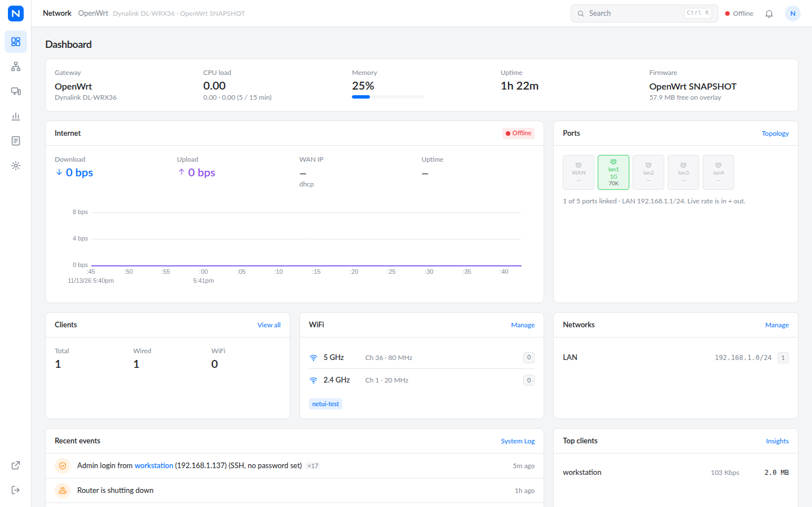
OpenWrt can do almost anything, but its settings are built for people who already know networking. netui puts the everyday jobs in front, explains them, and leaves the expert pages one click away.
Every change is shown for review first, then applied with a 30-second safety timer. If it cuts netui off from the router, the router undoes it by itself.
Turn any other OpenWrt router into an access point with one click. Connect it by cable or by wireless mesh, with automatic failover between the two. WiFi settings are copied to every access point.
A live dashboard, a map of your network, every device with its activity and open connections, monthly usage history and a WiFi channel advisor.
Plain web files served by the router's own web server. Nothing to run in the background, nothing phoning home, no cloud account. It even works on a phone.
netui signs in with its own limited login, never root. Add other admins, or read-only users who can look at everything but change nothing.
Ad blocking, a guest sign-in page, a VPN server, a second internet line for failover, smart queues, speed tests and firmware updates appear as soon as their package is installed.
Download the package for your OpenWrt version from the latest release, copy it to the router and install it. Not sure which version you have? Run grep DISTRIB_RELEASE /etc/openwrt_release on the router.
$ scp -O netui-0.2.0-r1.apk root@192.168.1.1:/tmp/ $ ssh root@192.168.1.1
# apk update # apk add --allow-untrusted /tmp/netui-0.2.0-r1.apk # netui-passwd
$ scp -O netui_0.2.0-r1_all.ipk root@192.168.1.1:/tmp/ $ ssh root@192.168.1.1
# opkg update # opkg install /tmp/netui_0.2.0-r1_all.ipk # netui-passwd
1. netui-passwd creates the netui login, limited to what the interface needs. Pick a password of at least 8 characters.
2. Open http://192.168.1.1/netui/ (or https:// if your router has a certificate) and sign in as netui.
3. Adding an access point? Install netui-agent on it, run netui-agent prepare, plug it in and click Adopt.
Never used a terminal? The user guide walks through every step on Windows, macOS and Linux. Upgrading works the same way and keeps your settings.
Real screenshots from a gateway and an adopted access point running OpenWrt 25.12. Click any picture to enlarge it.
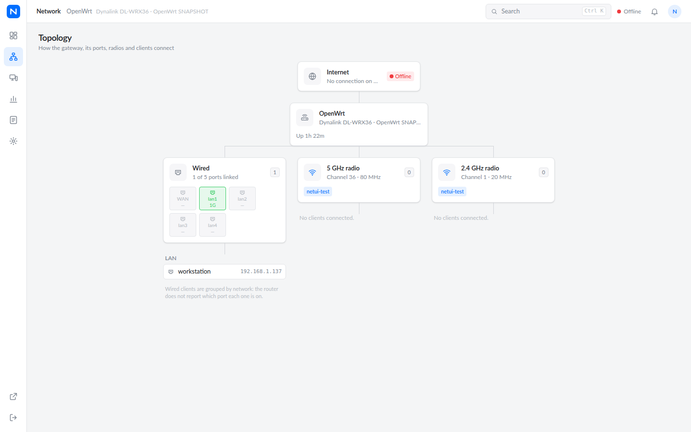
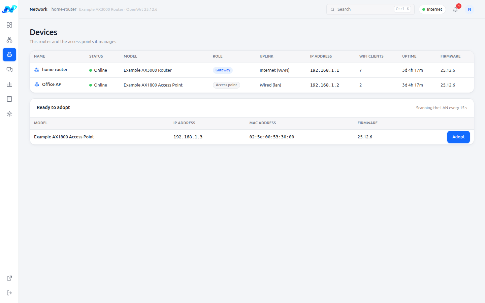
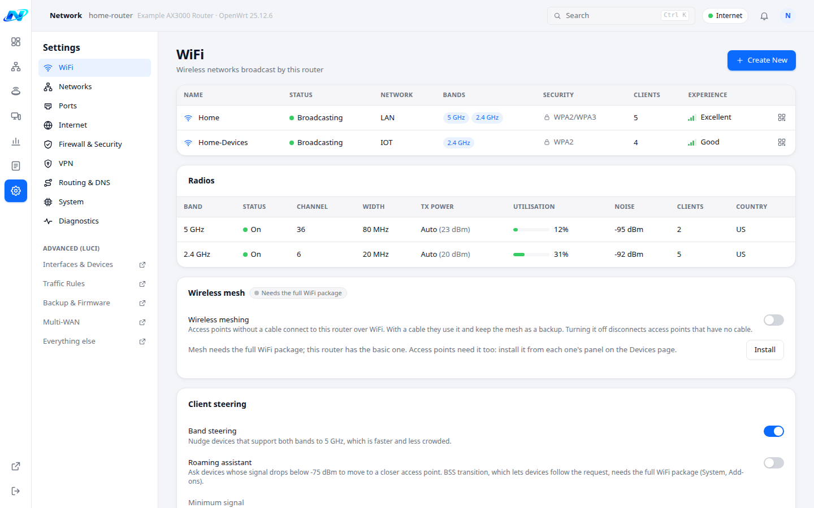
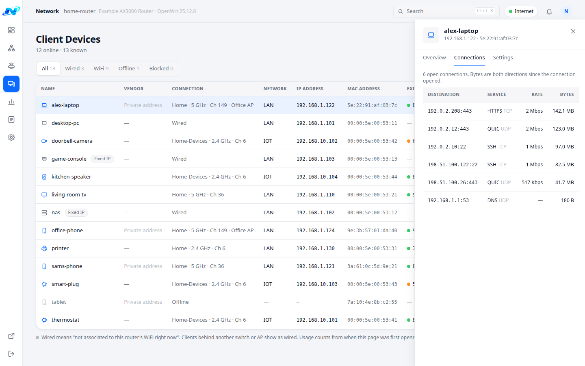
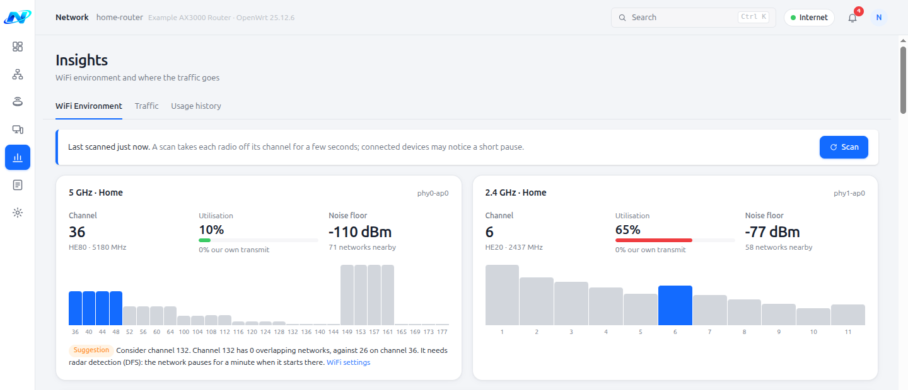
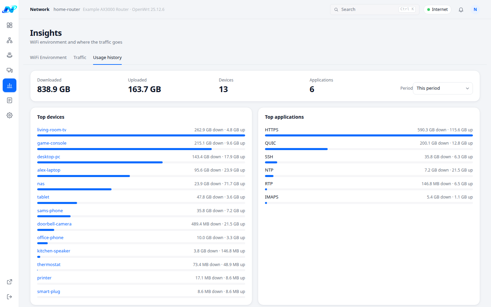
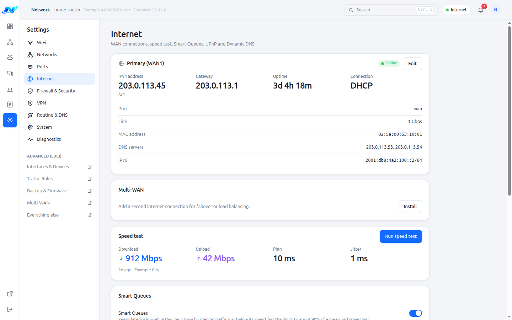
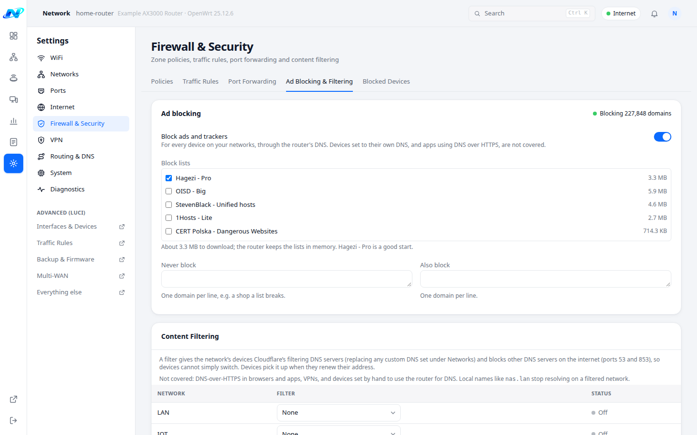
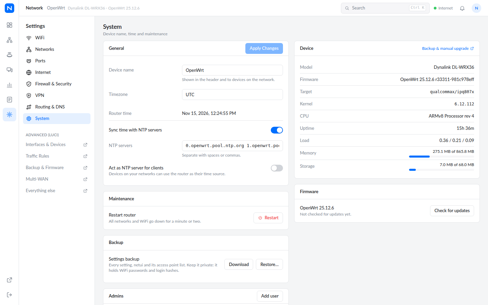
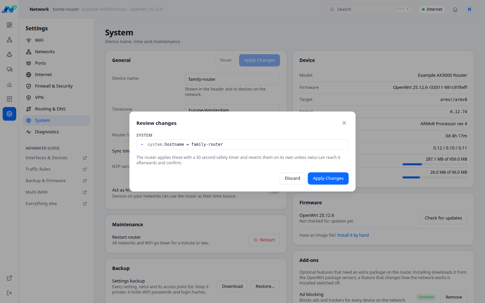
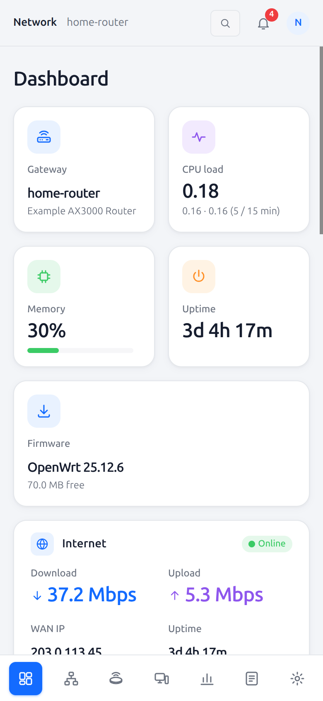
netui shows these pages as soon as the matching OpenWrt package is installed. Without them, it stays out of the way.
| Feature | Package |
|---|---|
| Ad blocking | adblock-fast |
| Guest sign-in page | opennds |
| VPN server | luci-proto-wireguard |
| Second internet line | mwan3 |
| Smart queues | sqm-scripts |
| Speed test | speedtestcpp or librespeed-cli |
| Usage history | nlbwmon |
| Client steering | usteer |
| Firmware updates | owut (standard on 25.x) |
netui does not replace OpenWrt's own settings pages. Both edit the same configuration, so you can use either at any time.
apk del netui or opkg remove netui takes it off again; LuCI and your settings are untouched.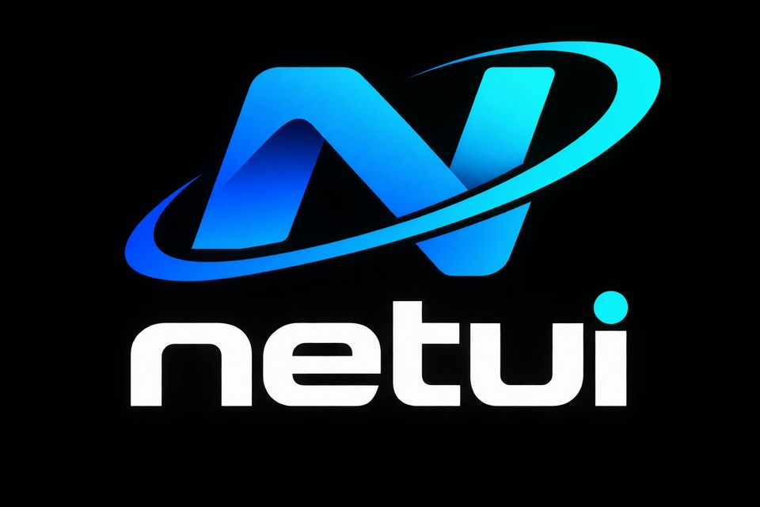
Free, open source and built on OpenWrt. Bug reports and ideas are welcome.